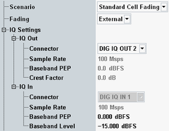

The parameters in this section configure the I/Q output path and/or the I/Q input path. This routing is relevant for external fading scenarios and for the "I/Q out - RF in" scenario. Only for these scenarios the section is present.
Depending on the scenario, the section configures only the I/Q output path or one input and one output path. Typically an external fader (e.g. R&S SMW200A) or an R&S SMU200A is connected.
When using the "I/Q out - RF in" scenario, it is recommended to specify also the external delay of the test setup in the setup dialog. The setting of external delay allows the "GSM Signaling" application to compensate a time delay in the output path, which results also in a delayed uplink signal.
See also: "Digital IQ"

Select the output connector. The input connector depends on the output connector and is displayed for information.
The DIG IQ connectors are at the rear panel (if an I/Q board is installed).
Remote command:The used sample rate is displayed for information. The value is fixed.
Configure the connected instrument accordingly (baseband input settings and digital I/Q output settings).
Remote command:Indicates the peak envelope power of the baseband signal as dB value relative to full scale. "Full scale" in this case corresponds to the maximum representable amplitude of the I/Q samples.
Use the displayed output PEP value to configure the baseband input of the connected instrument.
Configure the input PEP so that it matches the baseband output of the connected instrument.
Remote command:Indicates the crest factor of the baseband signal, i.e. the ratio of peak to average baseband power. The average power is calculated for time intervals with active downlink traffic channel timeslots only.
The crest factor changes during connection setup or when the coding scheme is changed.
Use the displayed crest factor value to configure the baseband input of the connected instrument.
Remote command:Indicates the nominal RMS level of the baseband signal during a call (connection established).
Configure the baseband level so that it matches the baseband output of the connected instrument.
Remote command: